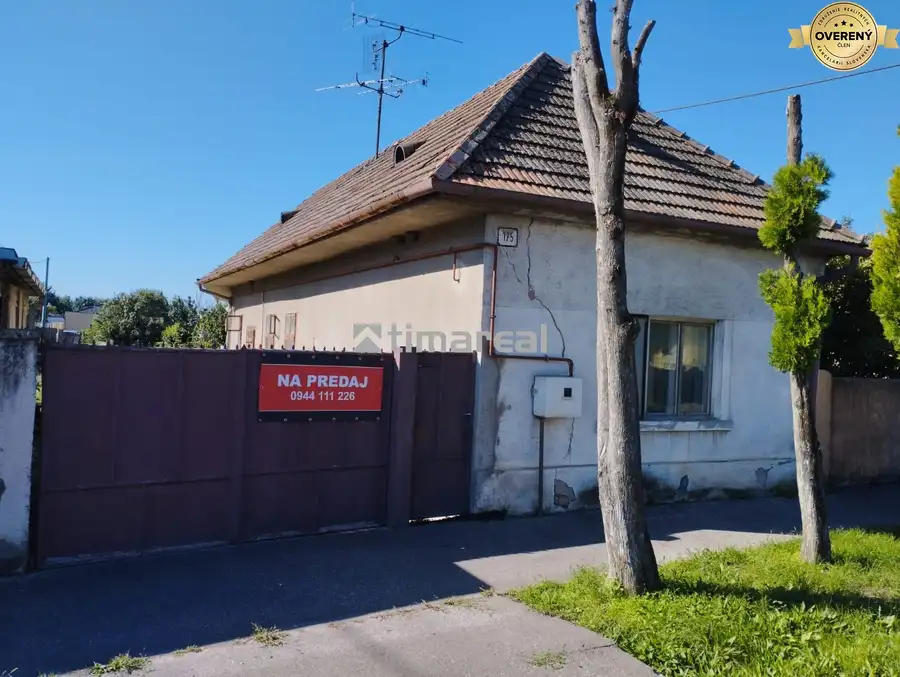
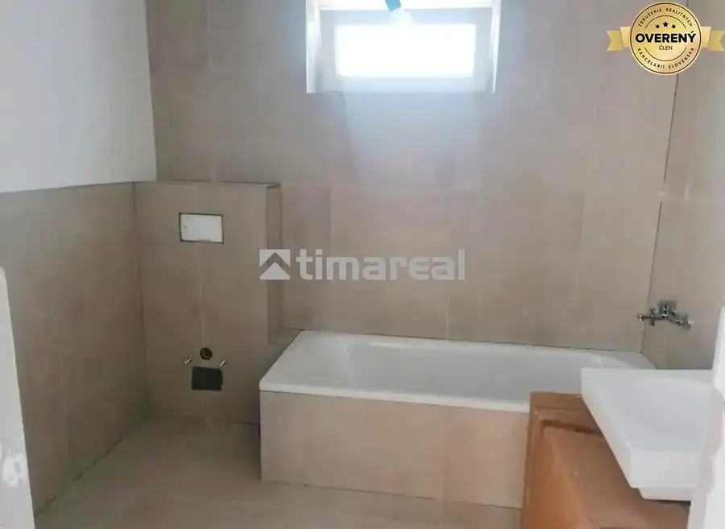
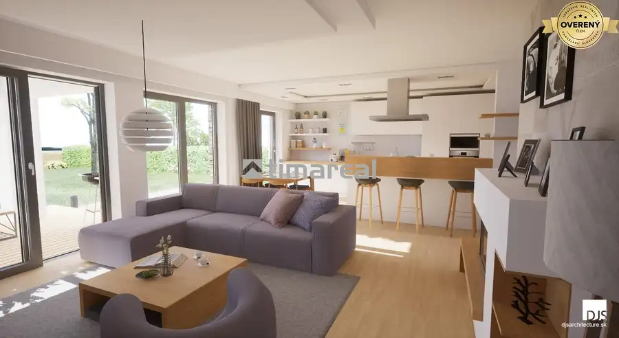

Útulný domček s malou záhradkou a terasou priamo v Senci
Senec
- Dispozícia3-izbový
- Plocha67 m²
- Poschodie0. z 1
- Stavpo rekonštrukcii
O nehnuteľnosti
Túžite po vlastnom bývaní, kde nebudete počuť susedov z paneláku, no zároveň nechcete stráviť celý víkend kosením obrovského pozemku?
Ponúkam na predaj zrekonštruovaný 3-izbový rodinný dom na Robotníckej ulici v Senci, ktorý spája to najlepšie z dvoch svetov – interiérové pohodlie mestského bytu a neopísateľný pocit súkromia na vlastnom dvore. Tento domček je ideálnou voľbou pre mladú rodinu, pár alebo jednotlivca, ktorí hľadajú štartovacie bývanie bez ďalších investícií. Menší, kompletne oplotený pozemok s rozlohou 147 m² je ako stvorený pre ľudí, ktorí chcú mať svoju zelenú oázu, vypestovať si vlastné jahody, no ich prioritou je oddych, nie otrocká práca v záhrade, pre ľudí, ktorí majú psíka alebo iného miláčika.
Dom má 22 rokov, je postavený z kvalitného Ytongu a minulý rok prešiel rekonštrukciou.
Na úžitkovej ploche cca 67 m² ponúka premyslenú a veľmi príjemnú dispozíciu rozdelenú na dennú a nočnú časť.
Prízemie (denný život):
Srdcom domu je útulná obývacia izba (12,7 m²) a samostatná, kompletne zariadená kuchyňa (9,6 m²) so vstavanou rúrou, indukčnou doskou a umývačkou riadu. Nájdete tu aj praktickú chodbu, samostatné WC s kotolňou a schodisko.
Podkrovie (nočný pokoj):
Ponúka dve izby(12,2 m² a 9,0 m²), z ktorých jedna disponuje vlastným balkónom. O dokonalý relax po náročnom dni sa postará kúpeľňa (5,1 m²) s rohovou vaňou.
Vybavenie:
Klimatizácia: V podkroví sa o príjemný chládok počas letných dní stará kvalitná jednotka Panasonic.
Plastové okná sú vybavené roletami.
Siete a náklady: Dom je napojený na kanalizáciu, vykurovanie zabezpečuje ústredné kúrenie s plynovým kotlom.
K dispozícii je rýchly optický internet od Telekomu.
Nízke mesačné náklady: Komplet plyn, elektrina a voda vyjdú iba na 200€ / mesiac.
Terasa a záhradka s krbom: To je to, čo v panelákovom byte nezažijete. Ranná káva, online práca z domu, či príjemná víkendová grilovačka s priateľmi, dieťatko spiace v kočíku na záhradke alebo čerstvé jahody zo záhonu.
Benefity lokality:
Robotnícka ulica je pokojná časť Senca a zároveň 5 min pešo od centra mesta. Parkovanie pred domom (bez parkovacej politiky), kompletná občianska vybavenosť, v blízkosti obchody, ZŠ, MŠ, lekári, rýchle napojenie na diaľnicu D1 smer BA a TT, cyklotrasy a v neposlednom rade Slnečné jazerá.
Pre viac informácií neváhajte kontaktovať maklérku. Obhliadky sú po dohode na tel.č.
Spoločnosť Timareal pôsobí na trhu od roku 2004. Poskytujeme služby v oblasti sprostredkovania kúpy, predaja a prenájmu všetkých typov nehnuteľností. Ochotne Vám zabezpečíme dokumenty potrebné pre kataster nehnuteľností, servis pri vybavovaní hypotekárnych úverov, vypracovanie znaleckých posudkov a poistenie nehnuteľnosti prostredníctvom zmluvných partnerov. Naši makléri disponujú odbornými znalosťami, zodpovedným prístupom a preto sú zárukou serióznej, bezpečnej a rýchlej realizácie obchodu.
Parametre
| Zastavaná plocha | 147 m² |
|---|---|
| Úžitková plocha | 67 m² |
| Poschodie | prízemie |
| Počet poschodí | 1 |
| Počet izieb | 3 |
| Stav | po rekonštrukcii |
| Odvoz odpadu | áno - separovaný |
| Voda | verejný vodovod |
| El. napätie | 230V |
| Plyn | áno |
| Kanalizácia | áno |
| Internet | optika |
| Kúpeľňa | vaňa |
| Vykurovanie | vlastné - plyn |
| Balkón | áno - 1 |
| Terasa | áno - 1 |
| Parkovanie | vonkajšie |
| Inžinierske siete | áno |
| Postavené z | Ytong |
| Zariadenie | čiastočne |
| Krb | áno |
| Klimatizácia | áno |
| Predzáhradka | áno |
| Okná | plastové |
| Terén | rovina |
| Prístupová cesta | asfaltová cesta |
| Dátum zverejnenia | 18. 9. 2026 |
Kde to je
Mohlo by Vás zaujímať

Rodinné domy6 155 000 €Starší dom neďaleko Slnečných jazier v obci Réca Reca 3-izbový120 m² Ponúkame na predaj starší rodinný dom, s veľkým pozemkom, ktorý si zaslúži rekonštrukciu podľa predstáv nového majiteľa. Po rekonštrukcii je možné ho…
Rodinné domy10 226 000 €Novostavba- 3i dom s dvorom s nízkou údržbou Kaplna 3-izbový68 m² Hľadáte súkromie, pokoj a vlastný kúsok záhrady, no nechcete tráviť víkendy kosením hektárov trávy? Táto 3-izbová novostavba samostatne stojaceho…
Rodinné domy4 301 500 €Novostavba moderného 4i domu v Hrubej Borši Hrubá Borša 4-izbový114 m² Ponúkame na predaj 2 nízkoenergetické novostavby 4i rodinného domu v obci Hrubá Borša. Moderná dispozícia s dostatočnou veľkosťou vytvára ideálny…